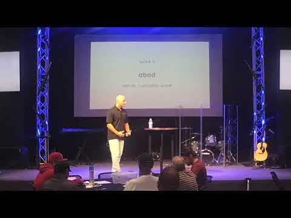

The new book by Tim Couet
Identity
Assignment
Where manhood starts: the identity God assigned to men in the garden, and how to live from it today.
Why this book
Fix the Lies. Fix the Man. Fix the World.
Prodigal Man was born out of the deep need for the men of the Church to reclaim victory in their lives. It starts with fixing the identity God assigned to men in the Garden of Eden, and from that identity learning how to lead at home, in the church and in the community.
If a man doesn't know his assigned identity by God he will always struggle. Identity Assignment is Tim Couet's book on the foundation of manhood: the identity God assigned to men in the garden, and how to live from it today.

The Foundation of Manhood
Identity Assignment
Where manhood starts: the identity God assigned to men in the garden.
Open on YouTube
About the author
Tim Couet
Jesus follower, husband, father, speaker, author and leadership coach, calling the men of the Church home to the identity God assigned them, so they can walk in victory as husbands, fathers and leaders.
Now available